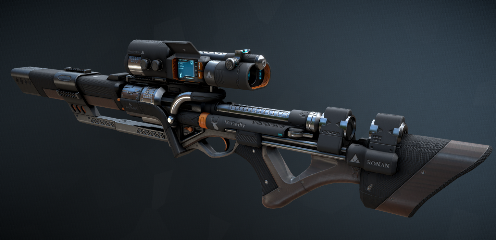
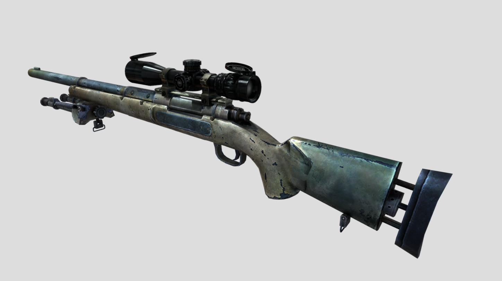
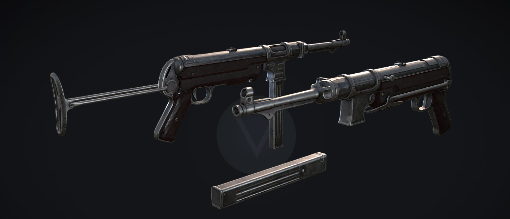

Misschien HBO
Omdat ik na mijn vorige MBO al naar het HBO wilde, maar nooit ging lukken en ik daarom koos voor het SintLucas, was mijn visie al om verder te studeren.
Ik zou wel bij het 'Breda University of Applied Science' (voorheen NHTV) verder willen studeren omdat daar, zowel volledig Engels wordt gesproken en omdat daar echte vakmensen als docenten rond lopen.
Die docenten komen uit triple-A bedrijven zoals Disney, Bethesda of Activision.
De opleiding zelf heeft ook al meerdere prijzen gewonnen.
Wat ik hier zou willen leren is gewoon hoe ik de skills die ik op het SintLucas heb geleerd, nog meer uit te breiden, samen met anderen super leuke games te maken en uiteindelijk met een goed idee de industrie te betreden.
Tuurlijk zou ik na het SintLucas ook gewoon kunnen gaan werken en een avond-opleiding kunnen volgen. Maar dat moet ik nog even goed gaan bekijken tegen die tijd.
|
Miscchien aan het werk
Tuurlijk zou ik, als ik besluit geen HBO te doen, aan het werk kunnen.
Ik denk zelf dan aan een begin bij een klein bedrijfje waar je bijvoorbeeld animaties maakt, en dan in je eigen tijd gaat werken aan een game.
Dan zodra je iets speelbaars heb van die game, dat online gooit op bijvoorbeeld Itch.io (waar de meeste beginners zitten, maar soms wel hele goede dingen tussen staan) en zo een community opbouwt.
Of ik zou bij een klein bedrijfje die bijvoorbeeld educatieve spellen maken kunnen beginnen. En daarvan uit een portfolio opbouwen om daarmee verder de industrie in te gaan.
-
Klein game-bedrijfje (Indie Game Studio)
Dit zou een goede start kunnen zijn, zoals ik al hierboven zei bijvoorbeeld bij een bedrijf waar ze educatieve spellen maken.
Maar dat zou ook een leuke stage zijn in het laatste jaar.
-
Bij een Triple-A bedrijf
Dit zou ik wel leuk vinden als dat ooit mag gebeuren omdat je dan bijvoorbeeld mee kan helpen aan de games die je zelf ook speelt.
Stel je voor dat je mee helpt aan iets van Call Of Duty, Battlefield, Fallout of League.
Dit is natuurlijk niet vanzelfsprekend maar het scheelt op het NHTV dat, wanneer je opvalt, je best een kans hebt dat de docenten daar met jou wat kunnen regelen voor bijvoorbeeld stage.

-
Eigen bedrijfje
Het zou me ook heel leuk lijken om een eigen bedrijfje op te starten. Waar je bijvoorbeeld je eindproject van of SintLucas, of het HBO kan uitwerken tot een game die je echt gaat uitbrengen.
Zolang je maar een creatief, origineel idee hebt heb je kans om een beetje in de game-industrie te komen.
|
Waar wil ik in groeien?
Op de pagina mijn hobby's heb ik laten zien dat ik zelf (onprofessionele) 3D modellen maak.
Die wil ik natuurlijk om gaan zetten naar wel professionele 3D modellen, gemaakt in Maya bijvoorbeeld (Of 3ds Max, de industrie standaarden).
Er zijn genoeg voorbeelden te vinden online waar ik uiteindelijk naar toe wil groeien, en als ik dan ooit werk, in de industrie zelf nog meer leer en groei.
Hier even snel wat voorbeelden van waar ik naar toe wil groeien, high-poly 3D modellen met niet al te zware maar toch mooie textures. Dit zijn alle 3 wapens, maar natuurlijk wil ik leren alles te maken. Van bomen tot mensen, en van een stoel tot zulke wapens.

Credits Ronan Sci-Fi Sniper

Credits M24 Bolt Action

Credits MP40
|
Wat lijkt me interessant
Wat mij interessant lijkt om uiteindelijk te leren, misschien hier op het SintLucas, dan wel op het HBO, zijn toch een paar dingen.
Waaronder VR, ik heb zelf een headset thuis liggen en ik vind het heel leuk om de Games in VR te spelen omdat het toch voelt alsof je ergens anders bent, terwijl je weet dat dat niet zo is.

Daarnaast zou ik het ook leuk vinden om te leren hoe je bepaalde animatie-soorten maakt. Een goed voorbeeld zijn weapon inspects op de Call of Duty games.
Je kan je wapen inspecteren, dus met een animatie. Maar zodra je richt bijvoorbeeld dan word de animatie soepel gestopt en gaat het terug naar hoe het karakter op het begin het wapen vast hield (De normale pose).
Dat soort animaties lijken me heel interessant om de leren, tuurlijk komt daar veel van de programmeurs kijken maar ook heel veel van de animators.
|